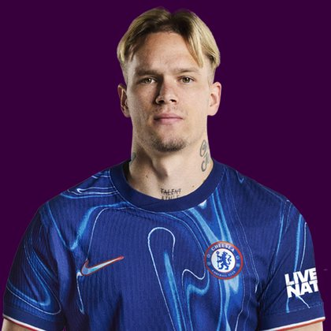

PITCHKEEP
Premier League ranks
Player File · MID TOT · Premier #409

Mykhailo Mudryk
MID · Spurs · age 25 · £5.3m
2025/26 Premier League
| Year | Starts | Min | G | A | xG | xA | CS | GC | Bonus | YC | Sleeper | FPL |
|---|---|---|---|---|---|---|---|---|---|---|---|---|
| 2025/26 | 0 | 16 | 0 | 0 | 0.0 | 0.0 | 0 | 0 | 0 | 0 | 0 | 1 |
FPL news
Injured - Ankle injury - Unknown return date - Chance of playing: 0%
Plus
- Consensus 213.0 vs Sleeper #419 - the industry still believes more than 2025/26 counted.
Minus
- Injured; Ankle injury - Unknown return date; 0% chance of playing.
- Board spread 213-419 (FPL Price Board to Sleeper BPL 2025).
PitchKeep Take · The Premier
Mykhailo Mudryk is a midfielder for Spurs, age 25, £5.3m. The Premier ranks him 409th overall by splitting Sleeper BPL 2025 (#419, 0.0 points) with the consensus of 1 other board (213.0). The industry still has him 206 spots ahead of the 2025/26 Sleeper count. The Premier pays that reputation something, not everything. Brand does not outrun a down year, and a down year does not erase a player Spurs still builds around.
The 2025/26 Premier League line is 0 starts and 16 minutes, 0 goals and 0 assists, 0 tackles and 0 CBI. Official FPL scored it at 1 points (1.0 per match). Sleeper's table turned the same counting stats into 0.0. Midfielders get 9 a goal, 6 an assist, and 1 a clean sheet, plus a full tackle/CBI stream. That is why a six who plays every week can outrank a ten-goal winger who sits.
Role at Spurs is the 2026/27 question sitting under the 2025/26 number. 0 starts is a starter. Anything under 25 starts is a rotation warning we already priced. Minutes are the skill that survives a finishing regression. The friendliest board is FPL Price Board at 213; the coldest is Sleeper BPL 2025 at 419.
Market: £5.3m, 2 boards on the file. Price is the FPL tax, not the rank. The Premier is who produced and who the boards still believe. ICT 0.1.
Instruction: he is on the 400, which is already a statement, and he is not a star. Stash in Sleeper if the minutes are real. Do not let a Pitch screenshot make you start him over a Premier top-80. FPL flag: injured; Ankle injury - Unknown return date; 0% chance of playing. Nearby on The Premier: Federico Chiesa, George Hemmings, Fábio Carvalho. Versus The Pitch (Sleeper-only #419), the hybrid moves him up to #409. That move is the third list doing its job.
He is 25, which on this board is neither a dart nor a warning label. Prime-age midfielders get ranked on what they just did and whether Spurs still gives them the ball. 16 minutes says yes. The 2026/27 FPL price (£5.3m) is the app's guess at whether that continues. The Premier is the blend of that guess and the box score.
How to use the file: The Pitch is the Sleeper-only 400 (he is #419 there). The Premier is the 50/50 with every other board we track. Attack, Midfield, Defence, and Keepers re-rank the same Sleeper table by position. BK Value on this page follows The Premier when you are on the hybrid calculator and The Pitch when you are on the Sleeper calculator. Same curve either way - 12,000 at 1.01.
Board graph
Spread 213-419 · 2 sources
Tape · 2025/26 Premier League
Mykhailo Mudryk vs Juventus | Chelsea 0-1 Juventus Friendly match 2026 Epl
Every Board
Spread 213-419 · 2 sources
| Source | Rank |
|---|---|
| FPL Price Board | 213 |
| Sleeper BPL 2025 | 419 |
PK News
All players · The Premier · The Pitch · PK News · Calculator